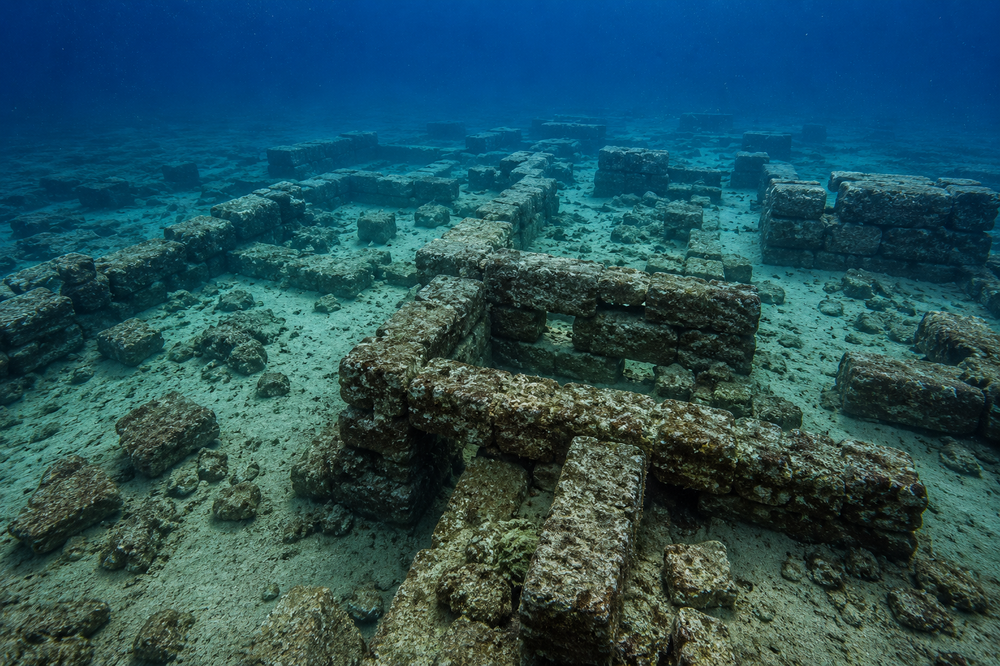
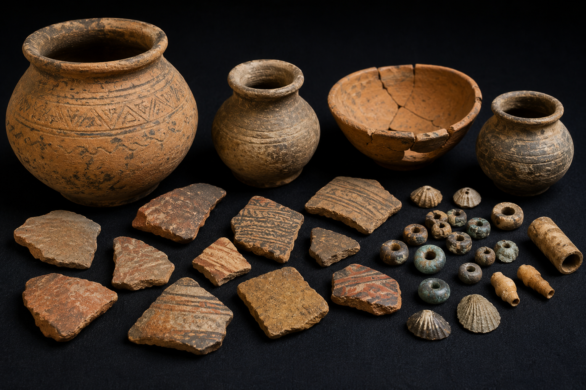
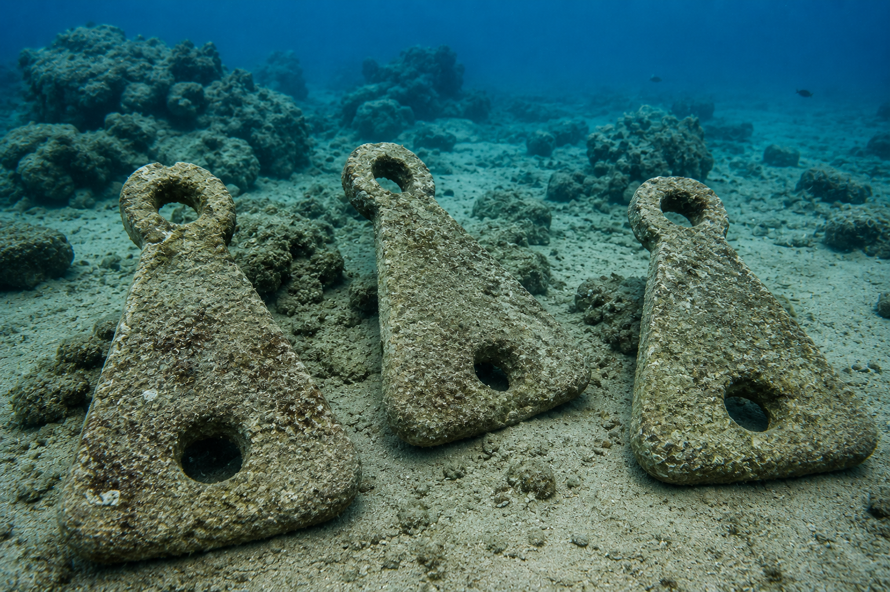
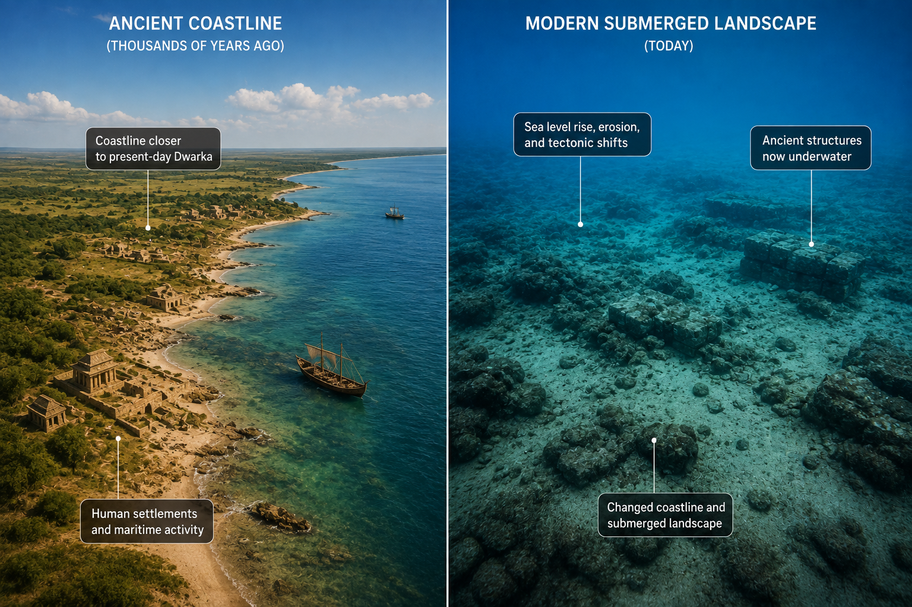
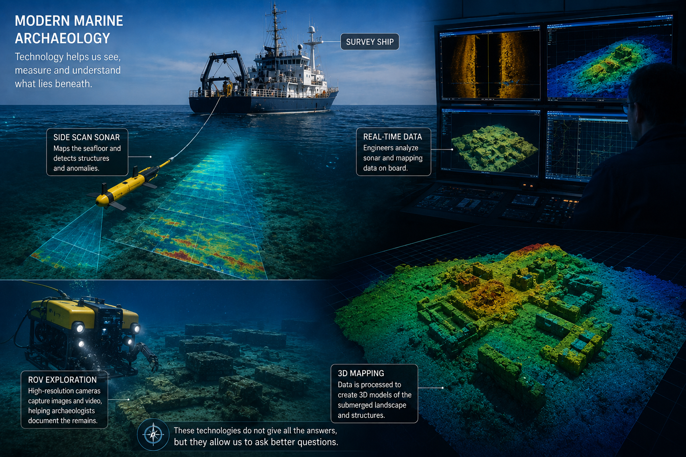

The most interesting point about the underwater discoveries at Dwarka is also the easiest one to misunderstand.
Archaeologists have found evidence of ancient human activity beneath and around the waters of Dwarka. They have documented submerged structural remains, stone anchors, pottery, artifacts and evidence of long-standing maritime activity. Marine surveys have also mapped parts of the submerged landscape using echo sounding, side-scan sonar and shallow seismic profiling.
But none of that, by itself, proves that the ruins are the exact city described in the Mahabharata.

That distinction is important.
It is tempting to look at photographs of underwater stone structures, place the Mahabharata beside them, and conclude that the mystery has been solved. But archaeology does not work that way. A structure can be ancient without belonging to Krishna's period. An anchor can demonstrate maritime activity without telling us exactly which century the ship belonged to. A submerged settlement can be real without necessarily being the legendary Dwarka of the epic.
And this is where the story becomes considerably more interesting.
Because once we separate what has actually been found from what people believe those discoveries mean, the Dwarka question becomes much harder to dismiss—and much harder to prove.
The First Problem: There Isn't Just One Dwarka
One of the biggest challenges is the assumption that there was a single ancient city called Dwarka that existed at one particular point in history.
The archaeological evidence does not necessarily support that simple picture.
The Dwarka region has a long cultural sequence. Excavations and surveys at Dwarka, Bet Dwarka and other sites around Okhamandal have identified evidence belonging to different periods, including protohistoric, early historic and medieval occupations.
The National Institute of Oceanography's research indicates that Bet Dwarka, in particular, preserves evidence of occupation extending back to the protohistoric period, while later material demonstrates continued activity over subsequent centuries.
This matters because coastal settlements are rarely static.
A successful port is likely to be rebuilt.
A damaged harbour can be repaired.
A settlement can expand inland.
Another can be established nearby when the shoreline changes.
A harbour can become unusable because of sedimentation and then be replaced by another one.
Over thousands of years, these processes can produce a complicated archaeological landscape containing remains from several different periods.
So when archaeologists discover ancient structures beneath the sea near modern Dwarka, they aren't necessarily looking at one frozen city.
They may be looking at different phases of occupation within a coastline that has repeatedly changed.
That is one reason assigning a single date to "the submerged Dwarka" is so difficult.
The Structures Are Real. Their Date Is the Difficult Part.
This is perhaps the most important qualification to the entire Dwarka story.
The submerged structures have been documented by marine archaeologists, but their precise age remains uncertain.
A National Institute of Oceanography paper specifically notes that the submerged structures themselves had not been directly dated by a reliable dating method. Instead, researchers have attempted to estimate their age through associated artifacts and comparisons with other archaeological material.

That distinction is easy to lose in popular accounts.
Imagine finding a stone wall underwater and a pottery fragment nearby.
If the pottery can be dated to 1500 BCE, it is tempting to say:
"The wall is 1500 BCE."
But that conclusion isn't automatically justified.
The pottery may have been deposited later.
It may have moved through sediment.
The wall may have been reused.
The two objects may belong to entirely different phases of occupation.
Archaeologists therefore distinguish between direct dating and dating by association.
This is one of the reasons the Dwarka debate has continued for so long.
There is compelling evidence that ancient people occupied and used this coastline.
There is evidence that some of the activity was very old.
But connecting a particular submerged wall to a particular historical period remains much more difficult.
Then There Are the Anchors

The stone anchors are among the most fascinating discoveries in the entire story.
And they are also one of the best examples of why the evidence needs to be examined carefully.
Researchers have documented large numbers of stone anchors in the Dwarka region. One detailed study published in the International Journal of Nautical Archaeology examined a group of twenty anchors discovered in water depths of approximately 10–14 metres. Several were found trapped between rocks in a configuration that researchers interpreted as evidence of an anchorage.
That is significant.
A concentration of anchors is difficult to explain as an accidental geological feature.
It tells us that ships were using this part of the coastline.
And not just small boats.
Some of the anchors are substantial objects, and their different forms provide clues about the maritime traditions that used them.
But here again, the dating problem appears.
Different anchor types have been associated with different periods across the Indian Ocean and Mediterranean worlds. Some triangular or composite forms have very broad chronological ranges, while grapnel-type anchors have been associated with later Indo-Arab maritime trade. Researchers studying Dwarka have therefore warned against assigning all of the anchors to one period.
This is an important finding in itself.
But the Maritime Connection Is Hard to Ignore
Even after removing the more speculative claims, the archaeological picture still tells us something remarkable.
The western coast of India was deeply involved in maritime trade thousands of years ago.
This isn't dependent on the Dwarka legend.
We already know it from sites such as Lothal and other Harappan settlements.
The Indus Civilization possessed sophisticated craft production, long-distance trade networks and an established relationship with the sea. Archaeological evidence demonstrates contacts extending across the Arabian Sea toward regions that are now part of Oman and the Persian Gulf.
Dwarka therefore sits within a coastline that was already part of an ancient maritime world.
This makes the existence of an important port near modern Dwarka entirely plausible.
In fact, it would be more surprising if such a strategically located coastline had not been used extensively by ancient communities.
The anchors add another layer to that story.
NIO researchers have compared Dwarka's anchors with examples from other maritime regions and have used petrographic analysis to identify the rocks from which some were manufactured. The results show that different types of stone available locally were used, while some materials could have originated farther away.
That kind of evidence doesn't tell us about Krishna.
But it tells us about sailors.
And trade.
And a coastline that mattered.
The Sea-Level Question Is More Complicated Than "The Ocean Rose"

The traditional story of Dwarka is simple.
The city existed.
Krishna departed.
The sea entered.
The city disappeared.
Geology is considerably less tidy.
Sea levels have changed dramatically since the last Ice Age. Around the world, archaeological sites that once stood on dry land are now submerged because coastlines migrated as sea levels rose.
But sea-level change is only one mechanism.
A coastal settlement can be affected by:
- gradual sea-level rise
- local subsidence
- tectonic movement
- coastal erosion
- changes in sediment supply
- storms
- tsunami events
- changes in river channels
- or several of these processes acting together
The western coast of India is not geologically static.
Researchers studying Dwarka have specifically investigated questions involving sea-level fluctuations, coastal evolution and the possibility of tectonic processes contributing to submergence. Earlier NIO research also used marine geophysical techniques to reconstruct the submerged extension of the Gomati channel.
That research is important because it moves the discussion away from the simplistic question:
"Could the sea swallow a city?"
The answer to that is obviously yes.
The more useful question is: "What physical process actually submerged these particular structures, and when did it happen?"
That question remains much harder.
The Geological Record Does Not Need Krishna to Explain the Submergence
This is where the scientific and religious interpretations can easily become confused.
A city disappearing beneath the sea does not require a supernatural explanation.
We know of ancient settlements that were submerged through completely natural processes.
In some cases, land subsided.
In others, earthquakes triggered tsunamis.
Elsewhere, rising sea levels gradually moved the shoreline inland.
Some cities experienced several of these processes over long periods.
Therefore, finding submerged structures at Dwarka does not establish that a divine event occurred.
But there is an equally important point on the other side.
The existence of a perfectly natural geological mechanism does not disprove the ancient story either.
Suppose an ancient coastal community really did experience a catastrophic flooding event.
The people who survived would have remembered it.
They would have told their children.
Their children would have told theirs.
Over generations, the event could become attached to the story of a famous king.
The physical event would remain geological.
The cultural memory would become mythology.
There is nothing scientifically impossible about that process.
The difficulty is demonstrating that this is actually what happened at Dwarka.
The Mahabharata Becomes Interesting at This Point
The most useful way to approach the Mahabharata is not to treat it as either a modern history book or a completely fictional work.
Ancient epics were created and transmitted in cultures where oral tradition was central to preserving knowledge. Stories could contain geography, genealogy, political memory and descriptions of natural disasters while simultaneously becoming religious and literary works.
That makes them difficult historical sources—but not necessarily useless ones.
The Mahabharata's account of Dwarka contains several elements that are at least geographically relevant:
- A coastal location
- A major settlement
- Harbour activity
- Fortifications
- A relationship with the sea
- And ultimately, the destruction or inundation of the city
Those details are interesting because archaeology has independently established that the Dwarka region supported ancient coastal settlement and maritime activity.
But we should resist making the next leap.
Archaeology does not currently allow us to say:
"The Mahabharata described these exact ruins."
What it allows us to say is:
"The archaeological landscape contains features that make some elements of the Dwarka tradition plausible."
That is a much more defensible statement.
And, in my opinion, a much more interesting one.
What About the Famous 3,500-Year Date?
This is another point that deserves clarification.
You will often see the Dwarka ruins described as being approximately 3,500 years old.
There is a basis for this number, but it is frequently presented without context.
NIO records from the late 1980s reported thermoluminescence dating of pottery from the protohistoric settlement at Bet Dwarka at approximately 3,520 years before present, while other associated material was assigned to later periods.
That is important evidence for ancient occupation.
But again, it does not mean that the submerged walls themselves have been directly dated to 1500 BCE.
The distinction may seem technical.
It isn't.
Dating is the foundation of archaeological interpretation.
If we cannot establish when a structure was built, we cannot confidently connect it to a particular historical event.
And that is exactly why the Dwarka mystery remains unresolved.
There Is Another Problem: Some Anchors May Be Much Later
The anchor evidence becomes even more interesting when we examine it closely.
A study of twenty stone anchors from Dwarka noted that the grapnel type is associated with Indo-Arab trade between approximately the eighth and sixteenth centuries CE, while triangular and composite anchors have much wider chronological ranges. The researchers explicitly described the dating of the Dwarka anchors as a matter requiring caution.
Another NIO study similarly noted that some rectangular or grapnel-shaped anchors are associated with Arab maritime trade and suggested that certain Dwarka anchors might belong to historical or later periods rather than the Bronze Age.
This does not weaken the discovery.
It actually makes it more valuable.
It tells us that Dwarka's maritime history may have continued for centuries.
The waters around the city may preserve evidence from multiple generations of sailors.
Instead of one lost harbour, we may be looking at a maritime landscape that remained important for a very long time.
And Then Archaeology Did Something Unexpected
The story didn't end with S. R. Rao's expeditions.
Decades later, the Archaeological Survey of India began renewed underwater investigations.
In February 2025, ASI's Underwater Archaeology Wing began a new exploration programme off Dwarka, led by Prof. Alok Tripathi. The initial work focused on the area near the Gomati Creek and involved underwater archaeological investigation and documentation.
The following month, the Ministry of Culture explained that the objectives included searching for, documenting and studying submerged archaeological remains and establishing the antiquity of recovered objects through scientific analysis of sediments and archaeological and marine deposits. The programme also uses modern remote-sensing and underwater documentation technologies.
That last part is particularly important.
The purpose of the new investigation is not simply to "prove Dwarka."
It is to collect better evidence.
That means documenting what exists, establishing its archaeological context, studying sediments, and determining the age of recovered material.
In other words, the modern investigation is asking precisely the questions that earlier work could not always answer.
Technology Has Changed the Investigation

The difference between early marine archaeology and modern underwater archaeology is enormous.
Early teams depended heavily on divers, visual inspection and relatively limited geophysical surveying.
Today, researchers can combine several technologies.
- Side-scan sonar — detailed images of the seabed revealing objects and structural anomalies
- Multibeam echo sounding — high-resolution bathymetric maps of underwater terrain
- Shallow seismic profiling — reveals what lies beneath the seabed, not just on the surface
- Photogrammetry — combines hundreds of photographs into three-dimensional models
- Sediment analysis — reveals environmental changes and coastal evolution
- Digital geographic models — integrating archaeological datasets
This matters because the central question is no longer simply:
"Can we find something underwater?"
It is:
"Can we reconstruct the environment in which that object or structure originally existed?"
That is a much more powerful question.
What Would Actually Prove the Case?
If someone wanted to make a scientifically convincing case that the submerged ruins were the Dwarka of the Mahabharata, what would archaeologists need?
Probably not one spectacular discovery.
They would need a chain of evidence.
- Structures with reliable chronological dating
- A coherent urban settlement rather than isolated features
- Associated artifacts belonging to the same period
- Archaeological chronology corresponding to the proposed epic period
- Geological evidence demonstrating submergence consistent with the archaeological sequence
- Inscriptions or other unequivocal evidence identifying the settlement
That last category would be particularly powerful.
An inscription identifying a ruler, dynasty or place corresponding to the literary tradition would dramatically change the discussion.
So far, archaeology has not produced such definitive evidence.
This Is Where the Dwarka Debate Should Stand
At present, there are several things we can say with reasonable confidence.
- Ancient settlements existed in the Dwarka and Bet Dwarka region
- The archaeological record demonstrates a long history of occupation
- The region was an important maritime environment
- Large numbers of stone anchors demonstrate extensive seafaring activity across different periods
- Some archaeological remains are now underwater
- Marine archaeological investigations have documented submerged structural remains including walls, bastions and other features
- The coastline has changed substantially over time
But there are also things we cannot responsibly claim yet.
- Archaeology has conclusively identified Krishna's historical capital
- Every submerged structure belongs to the same period
- Every anchor belongs to the Bronze Age
- The existence of underwater ruins proves every detail in the Mahabharata
Those limits are not disappointing.
They are what make the investigation worth following.
So, Was Dwarka Real?
There are actually several different questions hiding inside that one sentence.
Was there an ancient settlement in the region?
Yes.
Was the region involved in maritime trade?
Very clearly.
Did some settlements or structures become submerged?
The archaeological evidence demonstrates submerged remains.
Did a major ancient coastal city exist here?
There is substantial evidence for significant settlement and maritime activity, although the exact reconstruction and chronology remain debated.
Was that city Krishna's Dwarka?
That has not been conclusively demonstrated.
Could the Mahabharata preserve memories of a real coastal settlement and its destruction?
It is possible, but archaeology has not yet established that connection.
And that final distinction is where the story becomes genuinely fascinating.
Because we do not need to choose between two extremes.
We don't have to say that the Mahabharata is a modern historical record containing perfectly accurate dates and descriptions.
Nor do we have to assume that every geographical detail is meaningless mythology.
There is another possibility.
The epic may contain layers of memory.
A real place.
A real coastal community.
Real maritime activity.
Real environmental changes.
Perhaps even a real destructive event.
Over centuries, those memories could have been incorporated into a much larger religious and literary tradition surrounding Krishna.
That hypothesis is neither proven nor absurd.
It is simply one of the possibilities that future research could investigate.
The More Interesting Mystery
Perhaps the most important question isn't whether someone will eventually discover a stone inscription saying:
"Welcome to Krishna's Dwarka."
The more interesting question is whether archaeology can reconstruct the history of the coastline well enough to understand how the story developed.
Imagine discovering that a prosperous coastal settlement existed here around the period suggested by some of the older archaeological evidence.
Imagine then discovering evidence of significant environmental change.
Perhaps the shoreline moved.
Perhaps parts of the settlement were abandoned.
Perhaps another settlement was built nearby.
Perhaps later communities continued using the same harbour.
And perhaps generations of people remembered the earlier city and its disappearance.
That would give us something much more nuanced than a simple "myth proven" headline.
It would show how historical memory can survive environmental catastrophe and eventually become part of an epic tradition.
That kind of discovery would tell us something not only about Krishna or Dwarka, but about how human beings remember their past.
What Lies Beneath the Waves?
The Arabian Sea does not care about the arguments taking place on land.
For centuries, the same waters have moved across this coastline.
Ships came and went.
Ports expanded and declined.
Communities were built.
Some were abandoned.
Some were rebuilt.
And some were eventually covered by water and sediment.
Today, archaeologists are attempting to reconstruct that history from fragments.
A stone anchor cannot tell us who dropped it.
A wall cannot tell us who ordered it to be built.
A pottery fragment cannot tell us the name of the person who used it.
But together, thousands of such fragments can reveal something remarkable about a civilization.
They can tell us where people lived.
What they traded.
How they built.
Where they travelled.
And sometimes, how their environment changed.
That is what makes Dwarka worth investigating regardless of one's beliefs about Krishna.
If the ruins eventually prove to be the city described in the ancient texts, it would be one of the most significant archaeological discoveries in South Asian history.
If they turn out to belong to a different ancient port, the discovery would still be enormously important.
It would reveal another chapter of India's maritime history—one that has been hidden beneath the Arabian Sea for centuries.
And there is a third possibility.
The archaeological evidence may eventually show that the Dwarka tradition grew from several different historical layers rather than one single city and one single catastrophe.
That would arguably be the most interesting outcome of all.
The Final Question
For now, the responsible answer is simple.
The underwater archaeology of Dwarka has demonstrated a real and complex maritime archaeological landscape. It has not yet conclusively demonstrated that the submerged structures are the exact Dwarka of Krishna described in the Mahabharata.
That may sound less exciting than the usual headline.
But it is actually more exciting.
Because the investigation is still open.
The Archaeological Survey of India is continuing to examine the area using modern underwater archaeological techniques, with the explicit aim of documenting submerged remains and establishing their antiquity through scientific analysis.
Future discoveries could strengthen the connection between the archaeological record and the literary tradition.
They could weaken it.
Or they could reveal a more complicated history in which several ancient settlements contributed to the legend of Dwarka.
Until then, the stones beneath the Arabian Sea should be treated for what they are: evidence of a fascinating ancient coastal past, not yet a final answer to one of India's oldest historical mysteries.
And perhaps that is exactly where the story should remain for now.
Not solved.
Not dismissed.
But investigated.
Because sometimes the most valuable discoveries are not the ones that close a mystery. They are the ones that make us realize how much of the past we still haven't understood.
Sources & Further Reading
- National Institute of Oceanography, Goa — marine archaeological research and annual reports on Dwarka and Bet Dwarka.
- Gaur et al., A group of 20 stone anchors from the waters of Dwarka, on the Gujarat Coast, India, International Journal of Nautical Archaeology, 2001.
- National Institute of Oceanography — research on underwater exploration, sea-level change and the submerged extension of the Gomati channel.
- Archaeological Survey of India / Government of India — 2025 underwater exploration programme at Dwarka and Bet Dwarka.
The file remains open.